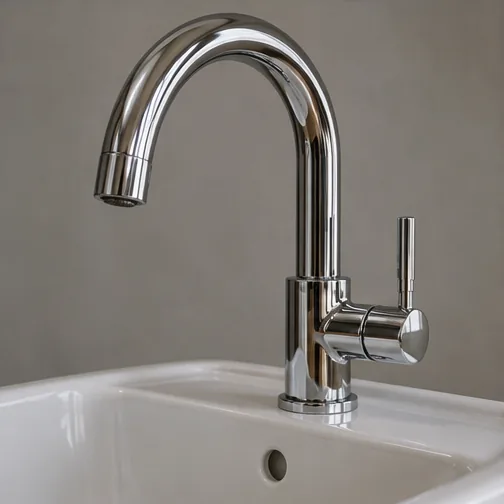
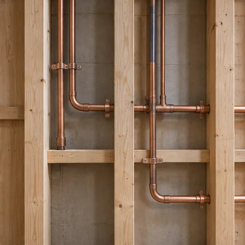
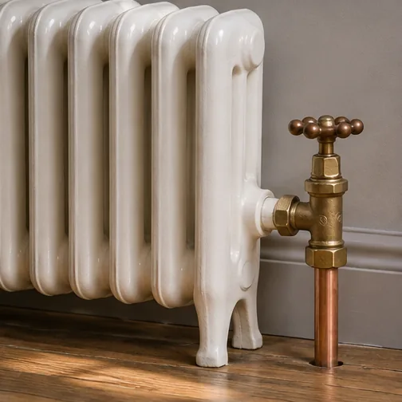
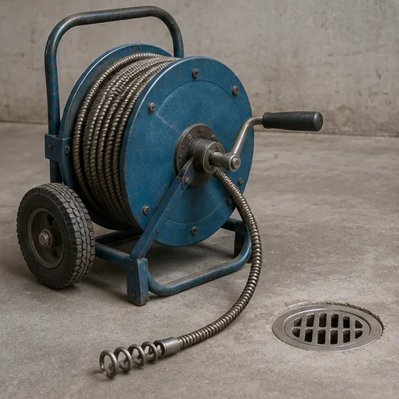

From a customer in Port Dover
A recurring leak in a house over 160 years old.
Andrew had two jobs for JVK. One was a circulating pump on his boiler. The other was a leak that kept coming back. He says replacing the copper piping finally solved it.

Family owned in Simcoe since 1991
A leak in an old home. A boiler that’s gone quiet. A new build ready for rough-in. Call our shop on Grigg Drive and tell us what you’re working on.
For homeowners, builders and the people who keep Norfolk County’s buildings running.

A dripping pipe, a leaking fixture or a repair in an older home.
Plumbing for occupied buildings, rental properties and working facilities.

Supply lines, drains and vents while the framing is still open.

Boilers, circulating pumps and rooms that aren’t heating evenly.

A slow fixture, a recurring blockage or several drains backing up together.
Our Simcoe shop
John Sr., John Jr., Shirley and Andrew are the family behind JVK Plumbing & Heating. JVK opened in 1991. Today the shop on Grigg Drive serves Simcoe and the surrounding communities.
More about JVKFrom a customer in Port Dover
Andrew had two jobs for JVK. One was a circulating pump on his boiler. The other was a leak that kept coming back. He says replacing the copper piping finally solved it.
“my favourite plumber in Norfolk”
“I only use JVK! Andrew is the BEST!!”
“Friendly and professional.”